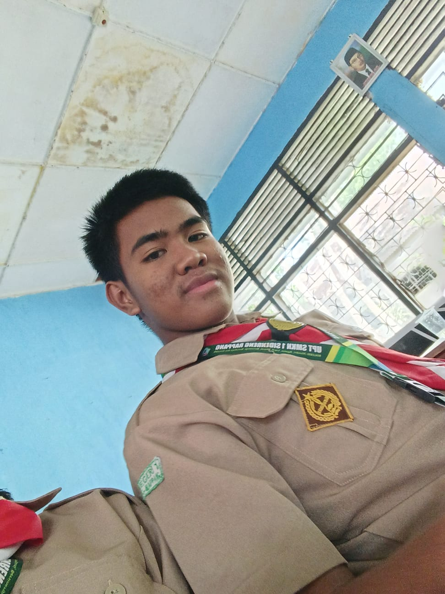

STRUKTUR KELAS XI TKJ FOUR
Rasta Gustianto, S.Pd

KETUA KELASTifatul Hidayat
WAKIL KETUA KELAS
Kristian Sampe Pato
BENDAHARA 1
Zhuriani
BENDAHARA 2
Putri Dian Pratiwi
SEKRETARIS 1
Nuri Nabila
SEKRETARIS 2
Zhara Awliya Muhardi
CATATAN
“Memimpin dengan tanggung jawab, bekerja dengan kebersamaan, dan melangkah dengan satu tujuan.”